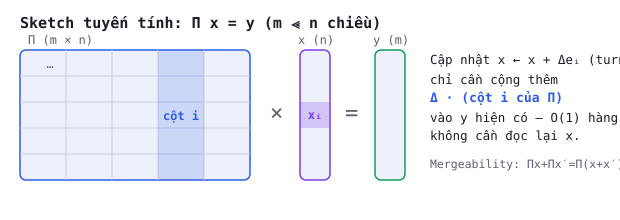

BUỔI 09 · Đại số tuyến tính
Ma trận, nhân ma trận-vector, phép chiếu
Một sketch tuyến tính đơn giản là $\Pi x$ — bộ nhớ $m\ll n$ chiều, cập nhật được tức thời khi luồng thay đổi.
PHẦN 1/2
01
Sketch tuyến tính $\Pi x$
- Tính tuyến tính cho phép cập nhật tức thời
- Tính hợp nhất: $\Pi x + \Pi x' = \Pi(x+x')$
- Cột thứ $i$ của $\Pi$ là $\Pi e_i$
Vì sao 'sketch tuyến tính' là chìa khoá của streaming
Vì phép nhân ma trận-vector tuyến tính, một cập nhật đơn lẻ vào luồng ($x_i \mathrel{+}= \Delta$, kể
cả $\Delta$ âm — mô hình "turnstile") chỉ cần cộng $\Delta$ lần cột $i$ của $\Pi$ vào sketch hiện có —
không cần đọc lại toàn bộ $x$.
Tính hợp nhất (mergeability)
Ứng dụng
Cho phép tính phân tán: 2 máy chủ xử lý 2 phần
luồng riêng, mỗi máy tính sketch riêng, rồi CỘNG 2 sketch lại = sketch của toàn bộ luồng gộp — không cần
truyền dữ liệu gốc.
PHẦN 2/2
02
Case study: CountMin là 1 sketch tuyến tính
- Mỗi hàng CountMin = ma trận 0/1 'chọn'
- Hàm băm quyết định vị trí giá trị 1 mỗi cột
- $(Ax)_i = x_{h(i)}$ khi A là ma trận chọn
CountMin nhìn dưới góc độ ma trận
Một hàng của CountMin là ma trận $A\in\{0,1\}^{B\times n}$: cột $i$ của $A$ có đúng 1 giá trị 1
tại hàng $h(i)$ (còn lại 0). Khi đó $(Ax)_j = \sum_{i: h(i)=j} x_i$ — chính xác là "bộ đếm gộp" của
CountMin tại ô $j$. Đây là minh chứng cụ thể nhất cho khái niệm "sketch tuyến tính": CountMin, CountSketch,
AMS, JL transform đều chỉ là các lựa chọn khác nhau của ma trận $\Pi$.
